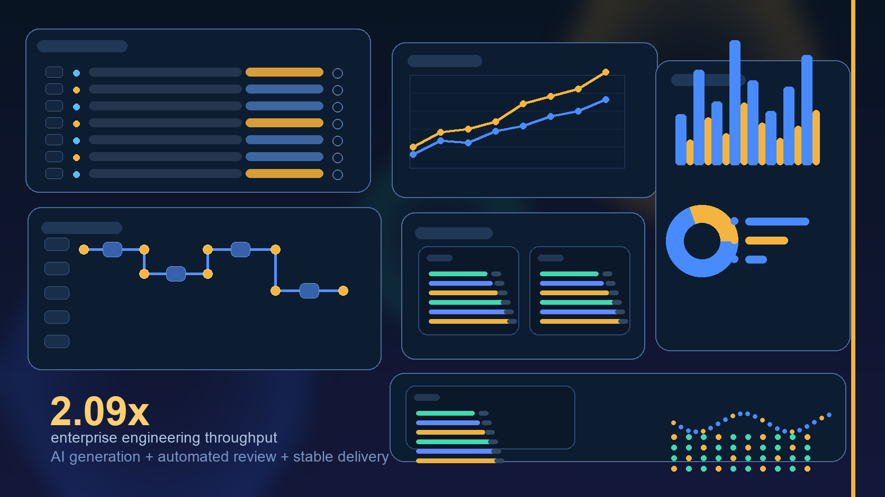

One Enterprise's 2.09x PR Throughput: A 2026 Business Case for AI Adoption in Engineering
A July 2026 longitudinal study shows engineering AI becomes commercially credible when coding tools, throughput goals, and review automation compound into stable delivery gains.
Read article →